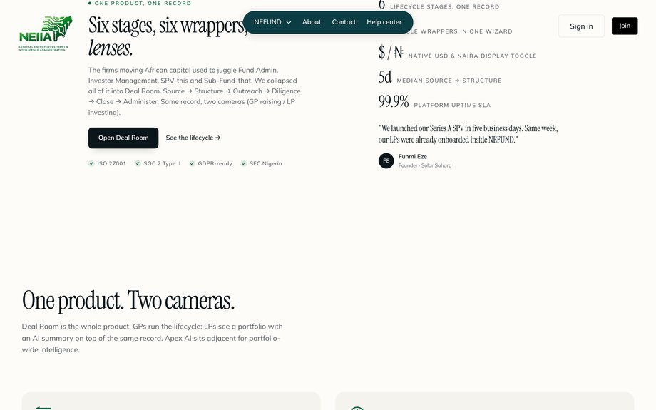
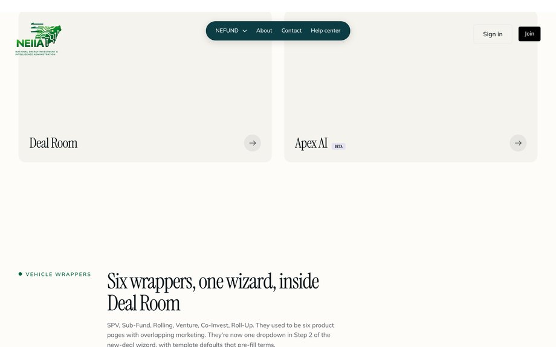

This walkthrough shows the product screens in the order you meet them. For the short written reference, see the help centre guide.
What it is
NEFUND is the umbrella framework that everything else on the platform sits inside. It is not a separate product — it's the operating model. When you read about Deal Room, LP Portal, or Apex AI, you are reading about the three working surfaces of the same record. NEFUND is the name of that record-shape and the rules that govern it.
The thesis is simple. The firms moving African capital used to juggle Fund Admin, Investor Management, SPV-this and Sub-Fund-that as five separate software products. NEFUND collapses all of it into one product (Deal Room), with one shared lifecycle (six stages), one wrapper library (six legal vehicles), and two reading angles (GP and LP) on the same underlying data.

Why one product, not five
Older infrastructure shops sold five separate things — a fund admin tool, an investor portal, an SPV manager, a sub-fund wrapper, and a reporting suite. They didn't share data, so you got the worst of both worlds: five logins, five integrations, five surfaces of truth, and reconciliation bills.
NEFUND's bet is that all of that is the same job described from different angles. Source → Structure → Outreach → Diligence → Close → Administer is the same six-stage path whether you're raising a $5M SPV in Lagos or a $40M sub-fund in Mauritius. The wrapper changes, the law changes, the LP profile changes — but the lifecycle doesn't. So the platform builds one deeply-integrated path with the wrapper as a switch.
The benefit shows up in three places: one source of truth (no reconciliation), shorter setup (median 5 business days source-to-structure), and LP-visible operations (the LP camera reads from the same record you're operating on, so there's no lag between what happened and what your LPs see).
The six lifecycle stages
Each stage has a fixed set of things that must be true before the platform lets you advance. This is the lifecycle state machine — codified in the platform's databank.js and enforced everywhere.
- Source. You have a deal memo. The platform asks for the issuer's caliber, the proposed raise size, and a one-paragraph thesis. Once submitted, the deal enters Under Review.
- Structure. Compliance has approved the deal. You pick a wrapper. The platform pre-loads the templated documents (CSAFE template, PPM template, etc.).
- Outreach. The deal is live. Investors can subscribe. The platform tracks subscription momentum and shows you who's looking, who reserved, who funded.
- Diligence. Optional intermediate stage for Lane B / large raises. Investors have asked questions; you respond inside the structured Q&A; answers are visible to all subscribers (preventing information asymmetry).
- Close. Allocation target reached or scheduled date hit. Issuer countersigns. Escrow releases. The deal moves to Active.
- Administer. Post-close operations. Quarterly reports filed. Calls and distributions run. LP camera is now serving live data to subscribers. This stage lasts until the deal converts (CSAFE → equity), matures (Bond), or is exited (sale).

The six wrappers
Each wrapper is a different legal vehicle. They're not interchangeable — you pick the one that matches what you're actually doing. The platform routes you automatically based on caliber, but it's useful to know what the choices are.
- SPV (Special Purpose Vehicle)
- Single-deal vehicle. You raise $X to invest in one company. LPs commit to the SPV; the SPV invests; you exit; LPs get distributed. Most common for one-off allocations.
- Sub-Fund
- A sleeve inside a parent fund. Lets a GP run a thematic strategy (e.g. "Climate Sub-Fund III") under the parent's master LPA. Shared governance, separate accounting.
- Rolling
- A continuously-raising vehicle with quarterly or semi-annual closes. LPs admitted in close #2 don't bear capital called before they joined. Used for evergreen capital.
- Venture
- The classic 10-year closed-end fund. Capital is called over an investment period, deployed across many deals, harvested over years 5-10.
- Co-Invest
- A vehicle that follows a lead deal. LPs commit to the co-invest opportunity directly, alongside the GP's main fund position. Carry is typically lower (no carry, or 10%).
- Roll-Up
- A vehicle to consolidate several smaller positions into one structure. Useful for tax efficiency or for cleaning up an LP base before a sale.
GP camera and LP camera
The platform shows the same deal record through two distinct interfaces. This is the single most important design choice in NEFUND and worth understanding deeply.
The GP camera. Default for whoever created the deal. Centred on the lifecycle stage strip — you can see which stage you're in, what's blocking advance, and the activity feed of every action against the deal. The GP can advance stages, change terms (until Live), invite investors, run Q&A, and trigger close.
The LP camera. Default for any verified investor who has subscribed (or who is browsing as a prospect). The LP sees the deal as a position — committed, called, NAV, IRR, distributions, and the next scheduled action. The LP can acknowledge calls, view documents, message the GP, and run Apex AI against their slice.
Crucially, both cameras read from the same underlying record. There is no "GP version" of the data and a separate "LP version" — there is one record, and the lens is the user's role. If a GP marks NAV at 1.3×, that's what the LP sees. If an LP acks a call, that ack appears in the GP's activity feed instantly.

Choosing the right wrapper
The platform auto-suggests, but here's the quick decision matrix:
- One deal, one check from a small group of investors? SPV.
- Thematic strategy under an existing fund structure? Sub-Fund.
- Evergreen capital, ongoing access for new LPs? Rolling.
- Traditional 10-year venture or PE fund? Venture.
- Following a lead investor on a single deal? Co-Invest.
- Cleaning up legacy positions? Roll-Up.
For Nigerian issuers raising under SEC Crowdfunding (Lane A in Deal Room), the platform additionally wraps the underlying agreement (CSAFE, Convertible Note, Equity Subscription) inside whichever vehicle you've picked. You're not choosing between "CSAFE or SPV" — you're choosing both: CSAFE as the security, SPV as the holding entity.
Glossary
- Camera
- NEFUND term for a reading angle on the same record. Two cameras: GP and LP.
- Caliber
- SMEDAN-framework classification of an issuer (Nano / Micro / Small / Medium / Large / Corporate) that drives lane routing.
- Closed-end fund
- Fund with a fixed life (typically 10 years). Capital committed up front, no new LPs admitted mid-life. Default for Venture wrapper.
- Open-end fund
- Fund with continuous subscription / redemption. Not yet supported on the platform — Rolling is the closest approximation.
- Master LPA
- The parent LPA under which Sub-Funds inherit governance. Single document, multiple sleeves.
- Stage gate
- The validation the platform runs before allowing a deal to advance from one stage to the next. Some gates are automatic, some require a compliance officer.
- Vehicle
- The legal entity that holds the investment (SPV / Sub-Fund / Rolling / Venture / Co-Invest / Roll-Up). One per wrapper.
Frequently asked
Is NEFUND a fund?
No. NEFUND is a framework — the operating model the platform uses to organise deal lifecycles, wrappers, and reporting. It is not itself an investable vehicle.
Can I run an existing fund on NEFUND?
Yes — there's a migration path. Bring your historical capital calls, distributions, NAVs, and cap table; the platform reconstructs the state and admits each LP onto the LP camera. Migration is typically 5-10 business days depending on the fund's vintage.
Do I have to use Deal Room to use NEFUND?
Yes. Deal Room is the operating surface for NEFUND. There is no NEFUND-as-a-product separate from Deal Room. The Edu Center distinguishes them for clarity, but at the platform level they're the same thing.
What if I want a wrapper that isn't on the list?
The platform supports six wrappers because those six cover ~95% of Nigerian and pan-African fund structuring needs. If you have a genuinely novel structure (e.g. a Sharia-compliant Mudaraba sleeve), contact the platform team — bespoke wrappers can be added but require legal review and a 4-8 week ramp.
Does the LP camera let LPs vote on fund decisions?
Yes, where the LPA permits. LPA-defined votes (key person event, GP removal, fund extension) generate a structured ballot inside the LP camera. Each LP votes; the platform aggregates and applies the LPA's quorum and threshold rules.